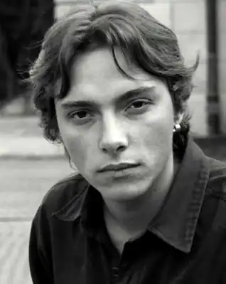
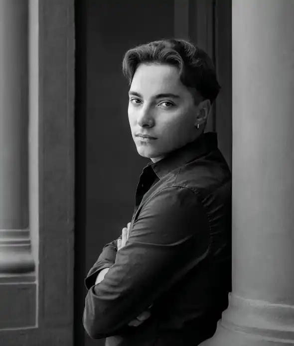

Андрíй Лю́бка ( 3 грудня 1987, Рига, Латвія) — український письменник перекладач і есеїст.
Народився в Ризі. Виріс у місті Виноградів Закарпатської області. Закінчив Мукачівський ліцей з посиленою військово-фізичною підготовкою. У 2009 році закінчив українську філологію Ужгородського національного університету, у 2014 — балканістику Варшавського університету.
Член Комітету з Національної премії України імені Тараса Шевченка. Активний волонтер, який протягом війни передав у ЗСУ понад 300 автомобілів; нагороджений медалями Головнокомандувача ЗСУ та Міністра Оборони України. Директор Інституту Центральноєвропейської Стратегії (ICES). У 2023 році ввійшов до списку "100 лідерів України" за версією Української Правди. Автор збірок поезій "Вісім місяців шизофренії" (2007), "ТЕРОРИЗМ" (2008), "Сорок баксів плюс чайові", книжки прози "КІЛЕР. Збірка історій" (2012, ЛА "Піраміда", Львів), книжки есеїв і колонок "Спати з жінками" (2014, Meridian Czernowitz і "Книги-ХХІ"), роману "Карбід" (2015, фіналіст конкурсу "Книга року BBC"), збірки оповідань "Кімната для печалі" (2016, Meridian Czernowitz) та збірки історій "Саудаде" (2017, Meridian Czernowitz), роману "Твій погляд, Чіо-Чіо-сан" (2018), книжки "У пошуках варварів: подорож до країв, де починаються й не закінчуються Балкани" (2019, фіналіст конкурсу Книга Року BBC), книги "малий український роман" (2020) та збірки короткої прози "Щось зі мною не так" (2022). У 2012 році в австрійському видавництві "BAES" видано збірку віршів автора, перекладених німецькою мовою — "Notaufname". У травні 2013 року в польському видавництві "Biuro literackie" (Вроцлав) вийшла збірка оповідань автора у перекладах Богдана Задури – "Killer", у 2016 році в люблінському видавництві "Warsztaty Kultury" вийшов "Karbid", це видання у 2017 році стало фіналістом престижної центральноєвропейської премії ANGELUS. У 2018 році польською вийшла збірка оповідань "Pokój do smutku" (Кімната для печалі"). У 2019 році в Словенії вийшов "Karbid" у перекладі Яни Волмаєр та Пріможа Лубея. У 2020 році в Північній Македонії вийшов роман "Твій погляд, Чіо-Чіо-сан" у перекладі Іґоря Станойоскі. У 2020 році в лондонському видавництві "Jantar Publishing house" побачив світ роман "Карбід" Андрія Любки в перекладі Райлі Костіґана та Айзека Віллера (ввійшов у лонґліст EBRD Literature Prize 2021). У 2021 році в люблінському видавництві "Warsztaty Kultury" у перекладі Богдана Задури вийшов роман "Twoje spojrzenie, Cio-Cio-san", у видавництві Dom Literatury w Lodzi – збірка вибраних віршів Андрія Любки "Nieudane próby samobójstwa", у литовському видавництві "Sofoklis" вийшов "Карбід" литовською мовою, а в сербському видавництві "Arhipelag" вийшов "Карбід" сербською мовою. В 2022 році у сараєвському видавництві "Buybook" вийшла книна "Soba za tugu" у перекладі Андрія Лаврека (Боснія і Герцеговина). У 2023 році роман "Карбід" вийшов у перекладі словацькою (Dennik N) та македонською (Muza) мовами. У 2021 році "Дикий театр" у Києві поставив виставу за романом "Карбід" (режисер – Олексій Доричевський). Учасник багатьох українських та міжнародних культурних заходів в Україні, Німеччині, Чехії, Польщі, Латвії, Литві, Росії, Сербії, Македонії, Чорногорії, Австрії, Туреччині, Швеції та Бразилії (у Берліні, Москві, Варшаві, Києві, Празі, Стамбулі, Кракові, Інсбруку, Ляйпціґу, Львові, Одесі, Харкові, Струзі, Подґоріці, Новому Саді, Мюнхені, Охриді, Вільнюсі, Дармштадті, Тірадентесі, Стокгольмі, Ріо-де-Жанейро та ін.). Гостьовий редактор спеціального числа польського журналу "Tygiel Kultury", присвяченого сучасній українській культурі (Лодзь, 2010), та спецвипуску про Україну до сербської щоденної газети "Данас" (Белґрад, 2016). Член Українського центру міжнародного PEN-клубу. Переклав із польської чотири збірки віршів видатного польського поета Богдана Задури, які у 2012 році вийшли у видавництві "Піраміда" книгою "Нічне життя" (вибрані поезії останніх років), книжку нагороджено літературною премією ім. Г.Сковороди. У 2015 році переклав книжку вибраних віршів Богдана Задури "Найгірше позаду". У 2014 переклав книжку польської репортерки Лідії Осталовської "Акварелі" про життя Діни Ґотлібової та долю ромів під час та після Другої світової війни (Видавництво Книги-ХХІ і Meridian Czernowitz, 2014). У 2016 році переклав із сербської роман "Комо" Срджана Валяревича, з хорватської – поетичну збірку Марка Поґачара "Людина вечеряє в капцях свого батька", з англійської – вірші кількох поетів для "Антології молодої поезії США". У 2017 році переклав культовий роман сербського письменника Светислава Басари "Фама про велосипедистів". У 2018 році в перекладі Андрія Любки вийшла книжка "Концерт" боснійського письменника Мухарема Баздуля. У 2019 році у "Видавництві 21" вийшли роман хорватського письменника Мілєнка Єрґовича "Батько" і роман "У трюмі" сербського письменника Владимира Арсенієвича в перекладах Андрія Любки. У 2020 році у перекладі Андрія Любки вийшов роман "Музей безумовної капітуляції" хорватської письменниці Дубравки Уґрешич, в 2021 – у перекладі з сербської роман Нобелівського лауреата Іво Андрича "Проклятий двір", роман "Паннонське чудовиське" бачванського русина Миколи Шанти, роман Мілєнка Єрґовича "Волґа, Волґа", роман хорватського письменника Слободана Шнайдера "Мідна доба" та дитячий артбук про Лемківщину польської письменниці Марії Стшелецької "Літо в Бескидах". У 2012 році разом з Dj Dimka Special-K видав альбом аудіовіршів "Перед вибухом поцілуємося", а в 2013 – альбом аудіопоезії "Я ненавиджу ранки". Колумніст видань Радіо Свобода, Збруч, День. Вірші та переклади друкували у журналах "Київська Русь", "ШО", "Всесвіт", "Потяг-76", "Post-Поступ", альманахах "Джинсове покоління", "Карпатська саламандра", "Корзо", "Кур'єр Кривбасу" та ін. Лауреат літературної премії "Дебют" (2007). Лауреат літературної премії "Київські лаври" (2011). Лауреат літературної премії Фонду Ковалевих (США) за найкращу прозову книжку року (2017). Лауреат премії імені Юрія Шевельова за модерну есеїстику (книжка "Саудаде", 2017). Окремі твори перекладено англійською, німецькою, китайською, португальською, івритом, російською, чеською, польською, сербською, македонською, литовською, словацькою, грузинською, румунською та турецькою мовами. Живе в Ужгороді.